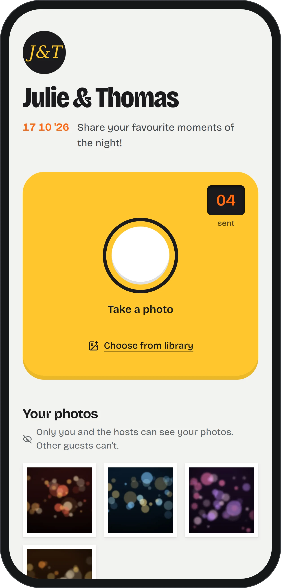
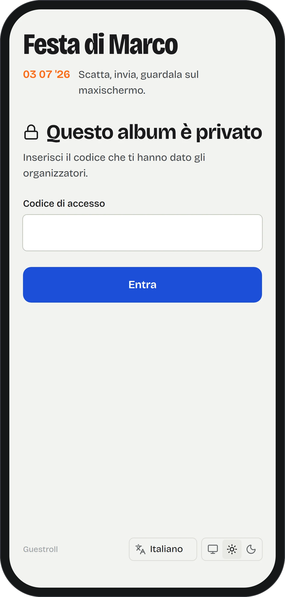
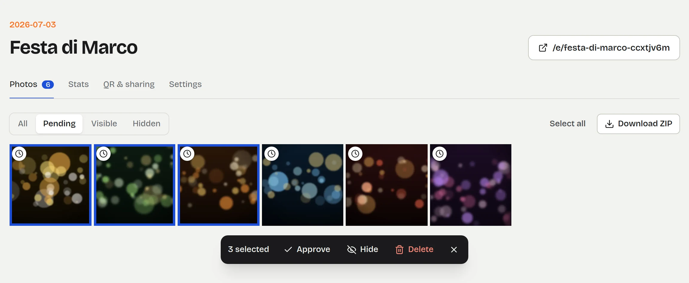
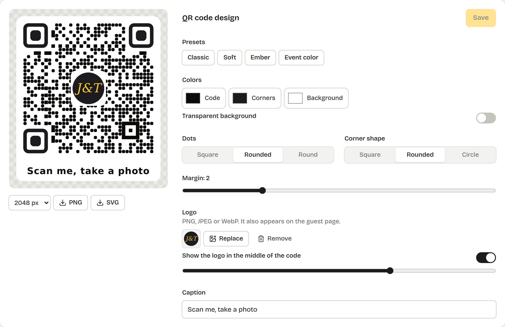
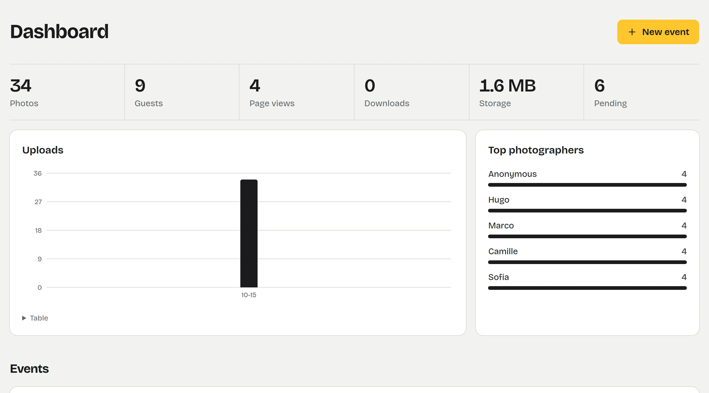
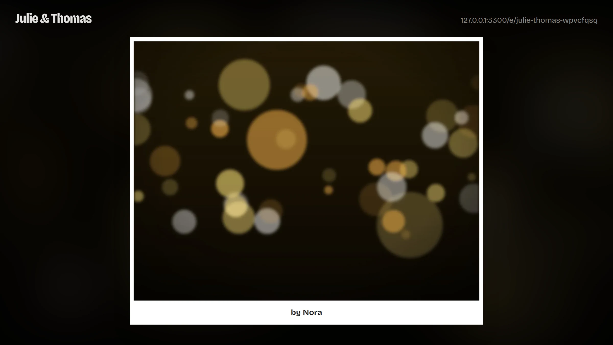

Every guest's photos, in one place.
Guests scan a QR code on the table, their phone's camera opens, and every photo lands in your private album. No app to install, no account to create. You host it, with one Docker command.

How it works
- 01
Scan
Print the card, one per table. The QR code opens a web page, on any iPhone or Android.
- 02
Shoot
The camera opens straight away. One tap and the photo is sent, even on a crowded room's 4G.
- 03
Done
Everything lands in the hosts' album, with who took it. Approve, project, download as a ZIP.
What you get
Built for the night itself: a guest has twenty seconds and one free hand. Built for the morning after: the hosts want every photo, sorted, private.
Guests only ever see their own photos.
- The album belongs to the hosts. No public gallery, whatever the settings.
- Every photo request is checked; a copied link opens nothing elsewhere.
- GPS position and camera metadata are stripped from every upload.
- Optional access code per event, and a new link in one click if the code leaks.

A contact sheet for the hosts.
- Approve each photo first, or publish and hide later.
- Select in bulk; approve, hide or delete.
- Download the whole album as one ZIP, streamed even when it weighs gigabytes.
- Stats: uploads per hour, views, downloads, top photographers.

A QR code that looks like your event.
- Colors, dot and corner shapes, your logo in the middle, a caption.
- Every preset is decoded by a real scanner in the test suite.
- PNG up to 4096 px, SVG for the print shop, a printable A4 table card.

Know how the night went.
- Photos, guests, page views, downloads and storage, at a glance.
- Uploads hour by hour, and who took the most photos.
- Every event in one table, with what's waiting for approval.

The live wall.
- A full-screen slideshow for a projector or a TV.
- New photos show up within seconds, credited to whoever took them.
- With moderation on, nothing reaches the screen before you approve it.

- English, Français, Italiano, Español
- Light and dark themes
- Per-album default language
- Upload limit per guest
- Scheduled closing
- Swappable capture component
Install it in a minute
One container, SQLite and a folder of photos in a single volume. Runs on a VPS, a NAS or a Raspberry Pi (amd64 and arm64).
$ docker run -d --name guestroll \
-p 3000:3000 \
-v guestroll-data:/data \
-e ADMIN_PASSWORD='choose-a-long-password' \
-e PUBLIC_URL='https://photos.example.com' \
ghcr.io/achedon12/guestroll:latest
Phones only open the camera on HTTPS pages: put Guestroll behind a reverse proxy with a certificate. The deployment guide has ready-made setups for Caddy, Traefik and nginx.
- MIT licensed
- No external database
- Configured with environment variables
- Tested: access rules, route guards, QR scans